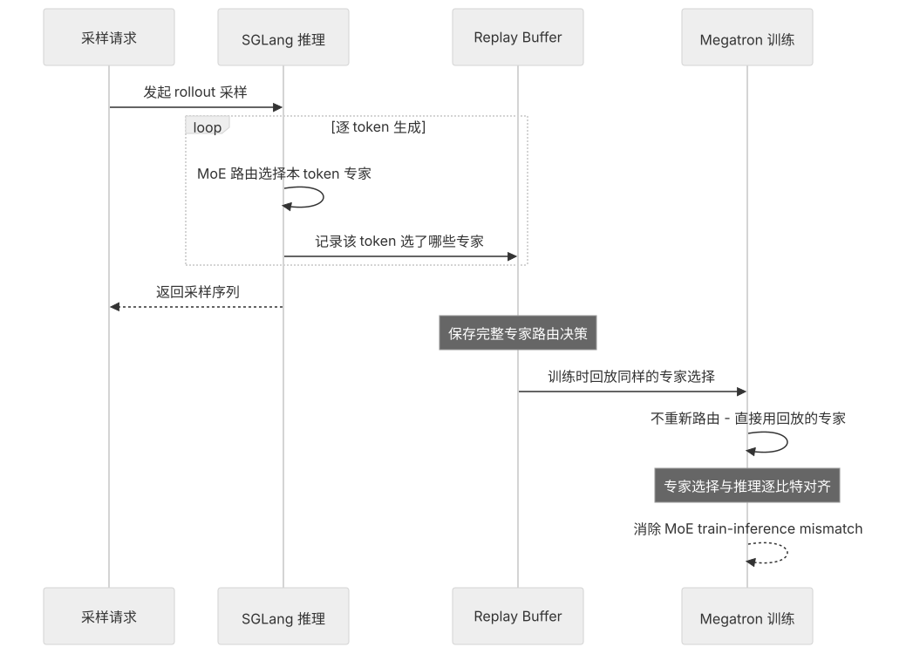

00全景与读法
一家公司同时握住"推理"与"RL 后训练"两个基础设施入口：SGLang 以 RadixAttention（基数树自动 KV 前缀复用）在 prefix-heavy / agent 场景比 vLLM 快约 29% 至 6×；Miles 以 SGLang 做 rollout、Megatron 做训练，核心创新是统一 FP8 流水线（首个端到端 FP8 采样 + 训练）与 Rollout Routing Replay（R3）——把 MoE 专家路由在 SGLang 推理时记录、Megatron 训练时回放，做到逐比特对齐，根治 MoE RL 的 train-inference mismatch。对本看板：R3 正是"训推一致性"在 GPU 上的标准答案，而它能否移植到昇腾（SGLang-Ascend + MindSpeed）是 RL-on-NPU 的一道关键缺口。
每一节固定三段：朴素基线（左栏，灰）——不看这家公司、按直觉做推理引擎或 MoE RL 框架会怎么做；它的做法（右栏，橙）——RadixArk / Miles 实际怎么做；差在哪（下方色块）——差异的实质、原文是否给了证据或机理、对 RL-on-NPU 的含义。数字按来源分三类：第三方 媒体报道或独立对比；自报 RadixArk / LMSYS 口径；推断 本站机理分析。原文标注 provisional、机理推断、非投资建议处全部保留。
贯穿全文的一条线索：MoE 的训推失配有两个正交维度——离散的专家路由与连续的数值通路。R3 固定前者，统一 FP8 对齐后者；只做其一，另一维度的漂移会让对齐失效。这也是昇腾移植的难点所在：两端路由与 FP8 原语都要重写，等于把两条漂移风险同时重新打开。
01公司：SGLang 的商业化
出身：SGLang 源自 LMSYS / 伯克利系开源，是"日均处理万亿 token"的推理引擎。2026-01 项目 spin-out 成 RadixArk，第三方 约 $400M 估值（TechCrunch）。融资：2026-05 宣布 $100M 种子轮，Accel 领投，天使含 Intel CEO Lip-Bu Tan。使命："Democratize Frontier AI Infrastructure" / "Ship AI for All"——做开放的前沿 AI 基础设施。时机：HuggingFace 的 TGI 在 2025-12 进入维护模式，SGLang 顺势成为主要开源替代；推理市场被各方称为 "battleground"。两条产品线：推理 = SGLang，RL 训练 = Miles。

这张图怎么读
看两个"入口"节点：推理服务与 RL 后训练，分别由两条产品线通向。多数基础设施公司只占其中一个；这张图的结构信息是一家公司同时坐在两个入口上。再看横跨两条产品线的那条边——SGLang 指向 Miles，标注"rollout 复用同一引擎"：这不是两条平行业务，而是同一引擎的两种用法——推理服务卖吞吐，RL 训练用它做采样。
这条边也是第 07 节"分发量构成竞争壁垒"的图示：SGLang 的采用量越大，Miles 的 SGLang 原生紧耦合越难被其他 RL 框架复制。顶部融资节点的数字全部为媒体报道口径，读图时应视为 provisional。
朴素基线
开源推理引擎的商业化路径是单一的：做托管推理服务或企业版，与 RL 训练框架是两个不同公司的业务。
它的做法
推理（SGLang）与 RL 训练（Miles）两条产品线并举，rollout 复用同一引擎；第三方 约 $400M 估值、$100M 种子轮、Accel 领投、Intel CEO 天使；时机上承接 TGI 进入维护模式后的开源替代位置。
差在哪差在入口数量：基线占一个入口，RadixArk 占两个且以同一引擎打通。原文对此的证据是公司自述的两条产品线与媒体报道的融资事实；估值与融资金额均为 provisional。对 RL-on-NPU 的含义：推理引擎的硬件后端决定了 RL 框架的 rollout 侧能在哪些硬件上跑——SGLang 的 Ascend 后端成熟度因此同时是推理问题与 RL 问题（第 09 节）。
02技术优势：SGLang 与 Miles 栈
SGLang（推理侧竞争壁垒）。RadixAttention：用基数树（radix tree）维护 KV cache 的 LRU，新请求来时做前缀匹配，命中就复用已算的 KV，不重算；对 prefix-heavy / RAG / 多轮 agent 工作负载收益巨大。性能：第三方 整体吞吐比"充分优化的 vLLM"高约 29%（16.2k vs 12.5k tok/s）；在唯一 prompt 批任务上差距趋零，在 prefix-heavy RAG 上可放大到 6×。定位：vLLM 赢在生态广度 / 社区 / 易用；SGLang 赢在前缀缓存、结构化输出、agent 工作流。
Miles（RL 训练框架）。栈 = SGLang（rollout）+ Megatron-LM（训练），从 slime（智谱框架，已用于 GLM-4.6 与大规模 MoE 训练）fork 而来。核心创新：自报 统一 FP8 流水线——首个端到端 FP8 采样 + 训练，让训练和推理用完全相同的 FP8 量化逻辑，消除 MoE RL 里量化不一致导致的"RL 崩溃"；Rollout Routing Replay（R3）——在 SGLang 推理时记录 MoE 的专家路由决策，在 Megatron 训练时回放，专家选择逐比特对齐，根治 MoE 的 train-inference mismatch，是 Miles 最具技术难度的创新；INT4 QAT——量化感知训练，让 1TB+ 模型单机可部署；在线 draft 模型投机解码——rollout 提速 25%+；零拷贝权重同步（CUDA IPC）、partial rollout（多轮）、截断 + 掩码重要性采样（修正 off-policy 偏差）、多智能体协同训练、VLM + LLM 统一。支持 DeepSeek（R1 / V3 / V3.2）、Qwen、Llama、Gemma、GLM。

这张图怎么读
看中间的桥接层：三个节点里两个是正向（R3、统一 FP8：SGLang → Megatron），一个是反向（零拷贝权重同步：Megatron → SGLang）。正向两条边传的是采样时刻的信息——专家选了谁、用的什么量化——目的是让训练侧重算 logprob 时与采样一致；反向那条边传的是新权重。整个 RL 循环的一致性问题全部集中在这个桥接层，这是 Miles 相对 verl / slime 差异化的位置。
外围层用虚线"覆盖采样与训练全程"，说明 INT4 QAT、投机解码、partial rollout、重要性采样修正等不是桥接层的组成部分，而是叠加在两侧引擎上的加速与稳定手段。其中"截断 + 掩码重要性采样"与 R3 的关系在第 04 节：R3 固定路由一致，不替代 off-policy 偏差修正，两者需叠加。
朴素基线
推理引擎按请求独立计算 KV，多轮 agent 每轮重算前缀；RL 框架把 rollout 引擎与训练引擎当作两个独立组件，训练时重算 logprob 逼近采样分布，精度上各自选 BF16 或 FP8。
它的做法
SGLang 以基数树自动复用前缀 KV（第三方 约 +29%，RAG 上至 6×）；Miles 在两引擎之间加桥接层：自报 R3 记录 - 回放路由、统一 FP8 端到端同一量化、CUDA IPC 零拷贝同步；外围叠 INT4 QAT（1TB+ 单机）、投机解码（+25%）、partial rollout、截断 + 掩码 IS、多智能体、VLM + LLM 统一。
差在哪差在是否把训推一致性当作独立的系统层。基线靠训练时重算，Miles 把一致性做成桥接层的两个组件。原文对 SGLang 性能给了第三方对比数字并注明场景边界（唯一 prompt 批任务差距趋零）；Miles 的各项为自报，且"首个端到端 FP8"是厂商口径。对 RL-on-NPU 的含义：桥接层的三个组件恰是第 09 节表中三个"关键缺口"——路由回放、端到端 FP8、零拷贝同步在昇腾上都待验证。
03MoE 的 train-inference mismatch 为何比 dense 更致命
RL（GRPO / PPO）的正确性依赖一个隐含假设：训练引擎对某条 rollout 重算出的策略分布，要和当初采样这条 rollout 时用的策略分布"足够接近"。重要性采样比 r = π_new(a|s) / π_old(a|s) 是整个梯度的核心权重——π_old 由 rollout 引擎（SGLang）在采样时给出，π_new 由训练引擎（Megatron）在前向时重算。只要这两个引擎对"同一 token 在同一上下文下"的 logprob 算得不一致，r 就会系统性失真，梯度方向被污染，轻则不收敛，重则 reward 崩溃（reward 表面上升但策略实际在退化）。
对 dense 模型，两个引擎的实现差异表现为连续的小数值误差：kernel 不同、累加顺序不同、FP 精度不同，带来的是 logits 上 O(1e-3) 量级的扰动。softmax 是平滑函数，这种扰动平滑地传到 logprob，r 在 1.0 附近小幅抖动，再叠加 GRPO 常规的 clip / 截断，基本能被吸收。dense 的失配是"有界、连续、可控"的。
MoE 把一个离散、不连续的决策插进了前向路径：router（gating）对每个 token 算 gating logits，然后 top-k argmax 选出激活的专家集合。这一步是阶跃的——① router 数值的微小扰动会翻转专家选择：当某 token 第 k 名和第 k+1 名专家分数接近时，引擎间 O(1e-3) 的 router 差异就足以让 argmax 边界翻过去，token 被路由到不同的专家集合，这种翻转在每层、每 token 上独立发生；② 专家翻转把"小数值误差"放大成"换了一条计算路径"——dense 下只是同一权重上的微小误差，MoE 下专家一旦翻转，token 过的是完全不同的 FFN 权重，logprob 漂移从 O(1e-3) 跳到 O(0.1) 甚至更大，且结构性、不可被 clip 当噪声吸收；③ 漂移经重要性采样破坏梯度——r = exp(logp_new − logp_old)，漂移 0.3 让 r 偏离约 1.35×，漂移 1.0 就是 e 倍，这种和"哪些 token 翻转专家"相关的有偏信号让 GRPO 给出方向错误的梯度，逐层逐 token 累积成 RL 崩溃。模型越稀疏（激活占比越低、专家越多、router 边界越密），翻转越频繁，越致命——而前沿模型（DeepSeek-V3 / V3.2、Qwen3-MoE、GLM）几乎全是稀疏 MoE。
朴素基线
训推失配是数值精度问题：两个引擎的 logprob 差 O(1e-3)，GRPO 的 clip 与截断能吸收；MoE 与 dense 的处理方式相同，多调一下 clip 范围即可。
它的做法
把失配拆成两类：dense 的连续小误差（有界、可控）与 MoE 的离散路由翻转（阶跃、结构性、不可被 clip 吸收）。后者把 O(1e-3) 的 router 差异放大为 O(0.1)+ 的 logprob 漂移，再经指数进入重要性比，形成方向错误的有偏梯度。
差在哪差在对失配性质的判断：连续误差可以当噪声处理，离散翻转不能。原文给出的是机理推导而非实测数字（漂移量级为示例性估算），这一限定应保留。对 RL-on-NPU 的含义是直接的：昇腾上重写 MoE 路由，kernel、累加顺序、tie-breaking 任一处不同，就在 gating 分数接近的 token 上翻转专家——这正是 align-probe 想量化的漂移（第 09 节）。
04R3：不重算路由，而是记录 - 回放路由
传统对齐手段是"训练时重算"：拿到 rollout 后训练引擎重跑前向、重算 logprob（乃至重算 gating）逼近 π_old。但这在 MoE 上有固有缺陷——训练引擎重算 gating 时，argmax 边界可能已经翻转，重算出的专家集合和采样时不是同一套。重算越精确，越是在用 Megatron 的 router 数值复现一个本属于 SGLang 的离散决策，而离散决策恰是不可复现的那部分。R3 换了思路：不重算路由，而是记录 - 回放路由。

这张图怎么读
看循环框内的两个动作："MoE 路由选择本 token 专家"与"记录该 token 选了哪些专家"——记录发生在采样循环内部、逐 token 进行，这意味着存储开销是每 token × 每层 × top-k 专家 id 的乘积，长序列、深层 MoE 下不可忽略。再看训练侧的自环："不重新路由 - 直接用回放的专家"：Megatron 的 gating 在训练时被旁路，这就是原文所说"要改训练前向"——MoE 层需支持外部注入专家选择。
最值得注意的是 Buffer 节点上的注释"保存完整专家路由决策"：它保存的是采样时刻的决策，不是训练当下的 on-policy 路由。π_new 用的是 π_old 的专家集合——对重要性采样这正是想要的，但读图时要意识到回放的是采样时刻的决策。图上没有出现的是数值通路：R3 只固定离散选择，连续数值误差交给统一 FP8（第 05 节）。
采样阶段 SGLang 把每个 token 每层 MoE 的专家路由决策（选中专家 id / top-k 集合）随 rollout 落盘；训练阶段 Megatron 走到 MoE 层时不再用自己的 gating argmax，而是直接回放 SGLang 当初选的那套专家。这样 train 和 inference 走逐比特相同的专家路径，离散决策被固定、不再翻转；剩下的连续数值误差交给统一 FP8。R3 的核心是：把"不可复现的离散选择"从重算变成回放，只让"可复现的连续数值"留给数值对齐处理——这是它相对 verl / slime 真正差异化的地方。
代价与边界（推断 provisional，机理推断）：要存路由（每 token × 每层 × top-k 专家 id，长序列 + 深层 MoE 下开销不可忽略）；要改训练前向（Megatron MoE 层需支持"外部注入专家选择"旁路，侵入式、要兼容各种 EP）；回放的路由严格说不是训练当下的 on-policy 路由（π_new 用的是 π_old 的专家集合——对重要性采样这正是想要的，但要意识到回放的是采样时刻的决策）；与 partial rollout / staleness 正交：R3 固定路由一致，但不替代修正 off-policy 偏差的截断 + 掩码重要性采样，两者需叠加使用。
朴素基线
训练时重算：训练引擎重跑前向，重算 logprob 乃至 gating，尽量逼近采样分布。重算越精确越好。
它的做法
记录 - 回放：SGLang 采样时落盘每 token 每层的专家集合，Megatron 训练时旁路自身 gating、直接回放。离散决策被固定，只把连续数值留给数值对齐。代价：存路由、改训练前向、回放的是采样时刻决策、需与截断 + 掩码 IS 叠加。
差在哪差在对"可复现"的认识：基线假定重算可以逼近一切，R3 承认离散决策不可复现、只能回放。原文对此给出的是机理论证，代价清单标注为机理推断（provisional），无实测开销数字。对 RL-on-NPU 的含义：R3 的全部价值建立在两端路由逐比特一致之上，昇腾上两端 router 都是重新实现的——这是第 09 节表中最关键的缺口。
05统一 FP8：一致性的另一半
R3 把离散路由固定为逐比特一致，但前向里还有连续数值通路——专家 FFN 的矩阵乘、attention、归一化。如果训练和推理在这条通路上用的 FP8 量化逻辑不同，即使专家选对了，logprob 照样会漂。量化不一致独立于路由就能破坏一致性：推理侧（SGLang）为吞吐用一套 FP8（scale 选取、per-tensor / per-channel / per-block 粒度、累加与反量化顺序、kernel），训练侧（Megatron）若用另一套 FP8 甚至 BF16，同一组权重和激活在两边算出的 logits 就有系统性偏差，经 softmax 进 logprob、进 r——和路由失配是同一根源的两条并行通道；而且 FP8 量化误差和 scale、激活分布相关，是有偏的，无法靠采样平均掉，长训练里累积成崩溃。

这张图怎么读
两条链的第一个节点决定了一切：上链是"量化逻辑不同"，下链是"同一套量化"。中间的"数值漂移"节点在上链是必然结果，在下链被"数值完全一致"替代。注意这张图讨论的漂移与第 03 节的路由翻转无关——即便路由全部对齐，量化不同仍会走上链。这就是原文所说"同一根源的两条并行通道"。
读这张图时要与图 3 合看：图 3 处理离散维度，图 4 处理连续维度。仅采用 R3：专家选对了但选中专家的 FFN 两边量化不同，logprob 仍漂移；仅采用统一 FP8：数值通路对齐了但 router 仍翻转专家，token 走错 FFN，此前的对齐失效。两者是失配的两个正交维度，必须同时采用，才能把 π_new 真正逼回 π_old。

这张图怎么读
先找到那条标注 "to rollout" 的虚线：它从训练侧量化好的 MXFP8 weight（row-wise, 1×32 block）直接指向 rollout。这就是"统一"的图示——rollout 用的低精度权重与训练前向用的是同一份量化结果，而不是各自从 BF16 主权重独立量化一次。原文所说"采样与训练同一套量化逻辑"在这张图上体现为一条边，而非两个独立的量化步骤。
再看三个 GEMM 框的标注：Wgrad 与 Dgrad 写的是 "BF16 tensor core, FP32 acc"，Fprop 写的是 "NVFP4 tensor core, FP32 acc, row-scaled epilogue scaling"——文档把这张图放在 MXFP8 一节，但 Fprop 框沿用了 NVFP4 的标注，读图时以文档正文为准（正文说 MXFP8 用于 rollout、前向、权重梯度与数据梯度 GEMM，配置的张量保留 BF16）。所有 GEMM 均为 FP32 累加、优化器状态与主权重为 FP32——低精度只在 GEMM 输入上，这是量化误差"有偏但可控"的前提。这张图是 2026 年 Blackwell 硬件上的配方，与原文 2025-11 时点的 FP8 描述属同一原则的后续形态，不应据此推断原文时点的实现细节。
朴素基线
推理侧为吞吐选 FP8，训练侧为稳定选 BF16 或另一套 FP8；两侧量化各自独立选择 scale 粒度、累加与反量化顺序、kernel。
它的做法
自报 首个端到端 FP8 采样 + 训练：两侧用完全相同的 FP8 量化逻辑。原文判断这是 Miles 相对 verl / slime 的另一处真差异化；NeMo-RL 也有 FP8 但绑 NVIDIA。
差在哪差在量化是否被当作训推一致性的一部分：基线把它当作两侧各自的性能选项，Miles 把它当作与路由对齐并列的一致性维度。原文给出的是机理论证（量化误差有偏、不可平均掉）；"首个"为厂商口径。对 RL-on-NPU 的含义：统一 FP8 与 Dispatch 02 / 03 的 FP8 RL、昇腾 950 原生 FP8 同向，但 NPU 的 FP8 数据通路与量化原语与 GPU 不同，要让两端 FP8 逐数值一致，工作量与可行性待验证（第 09 节）。
06同行对比
| SGLang | vLLM | TGI | |
|---|---|---|---|
| 核心技术 | RadixAttention 前缀复用 | 生态广、PagedAttention | 已进维护模式（2025-12） |
| 强项场景 | prefix-heavy / RAG / agent | 通用、社区最大 | — |
| 商业体 | RadixArk 约 $400M | Inferact 约 $800M | （HF） |
| 框架 | 出身 | MoE / EP | FP8 | 差异点 |
|---|---|---|---|---|
| Miles | RadixArk（SGLang） | 是，Megatron | 端到端 + R3 | SGLang 原生 rollout、R3 逐比特对齐 |
| slime | 智谱 THUDM | 是 | 部分 | Miles 的上游 |
| verl | 字节（HybridFlow） | 是 | 进行中 | 最广用、引擎中立 |
| NeMo-RL | NVIDIA | 是 | 是（NeMo 生态） | 绑定 NVIDIA 栈 |
| OpenRLHF | 社区 | 较弱 | — | 易用、起步早 |

这张图怎么读
这张图的分组标准只有一个：能否正确做专家并行。从"前沿模型几乎都是稀疏 MoE"出发的两条边给出了它为什么是分组标准——实线指向 Megatron 系（需要 EP 才能正确训练），虚线指向非 Megatron 系（EP 缺位则难以承载）。这与 Dispatch 12 框架表中"能正确做 EP 不是加分项而是必要条件"一致。
组内再看 Miles 的位置：它与 slime 之间是 fork 共演化的实线，说明 Megatron 系内的差异不在 EP 本身（都有），而在 EP 之上的一致性工程——R3 + 统一 FP8。NeMo-RL 节点同样有 FP8，区别在于绑定 NVIDIA 栈；这与第 07 节"栈依赖"风险和第 09 节的昇腾问题是同一件事的两面。
朴素基线
RL 框架选型看易用性与社区规模；推理引擎选型看通用吞吐；MoE 支持是可后补的特性。
它的做法
以 EP 正确性为一级分组标准，只有 Megatron 系入围；组内以 R3 + 统一 FP8 为真差异化；推理侧以场景（prefix-heavy / agent）而非通用吞吐定位。vLLM 赢在生态广度，SGLang 赢在前缀缓存、结构化输出、agent 工作流。
差在哪差在选型的第一性标准：基线以易用性为先，本篇以 MoE 正确性为先。原文对同行的判断多为通行认知，verl 的 FP8 标"进行中"、slime 标"部分"，均需以各仓库最新状态为准。对 RL-on-NPU 的含义：昇腾栈的 RL 框架若要承接前沿 MoE，第一道门槛同样是 EP 正确性（MindSpeed 需提供等价 EP），第二道才是一致性工程。
07技术壁垒与风险
壁垒：① 人才——做出 RadixAttention 的 SGLang 核心团队，系统工程深度难复制；② 分发量构成竞争壁垒——SGLang 日均万亿 token、是众多 RL 栈的 rollout 引擎，Miles SGLang 原生的紧耦合是其他框架无法提供的；③ R3 / 统一 FP8 的高难度工程——让 MoE 训推逐比特一致是高难度的工程，先发优势明显；④ 开源飞轮——开放 SGLang + Miles → 采用 → 企业版变现（Databricks / vLLM-Inferact 相同模式）。
风险：开源基础设施变现未验证——能否从"免费引擎"转为"盈利的企业产品"仍待验证；vLLM 生态更大、融资更多（Inferact $800M），社区与广度上 SGLang 仍追赶；巨头竞争——NVIDIA（NeMo-RL + 硬件捆绑）、各云厂自带推理服务、价格战导致推理商品化；栈依赖——深度绑定 Megatron / NVIDIA，对国产 NPU（昇腾）的支持是另一条战线；团队 / 项目的开源中国渊源（slime / THUDM 共演化），在部分企业 / 政府采购上可能成为考量。
这张图怎么读
这张图对应第 07 节壁垒②"分发量"与④"开源飞轮"：它展示的是与 Miles 有构建、贡献或协作关系的组织范围，横跨硬件厂商、云服务商、模型实验室、初创公司与高校——其中也包含上游 slime 与本篇第 06 节表内的同行生态成员。范围之广是开源飞轮"采用"一环的直观证据。
但要读出它不能证明什么："构建、贡献、协作"三种关系被并列展示，图上无法区分谁在生产中用 Miles 做真实 MoE 后训练、谁只是贡献过代码或提供算力。第 08 节的观察指标之一正是"Miles 被头部实验室用于真实 MoE 后训练的案例"——这张致谢图不是那个证据，它只说明生态接触面。图上也没有任何国产 NPU 厂商的标识，与第 07 节"对昇腾的支持是另一条战线"一致。
朴素基线
开源基础设施公司的壁垒是代码本身；代码开源即无壁垒，风险主要是被复刻。
它的做法
壁垒在人才、分发量、高难度一致性工程的先发优势与开源飞轮四项，代码开源反而是飞轮的起点。风险集中在变现未验证、vLLM 生态与资金优势、巨头与商品化、NVIDIA 栈依赖、开源渊源的采购考量。
差在哪差在壁垒的位置：不在代码可见性，而在做出并维护 R3 / 统一 FP8 这类逐比特一致性工程的能力与 SGLang 的分发量。原文的壁垒与风险为分析性判断，无量化。对 RL-on-NPU 的含义：栈依赖既是 RadixArk 的风险，也是昇腾的机会——"对非 NVIDIA 硬件的支持进展"被原文列为观察指标。
08投资视角（非建议）
看多：推理是当下增长最快的市场；SGLang 是开源前二的引擎；顶级团队 + Accel + Intel CEO 背书；$400M 估值相对 vLLM-Inferact 的 $800M 偏低；同时握住推理 + RL 训练两个入口；MoE 后训练是前沿方向而 Miles 在此最强。看空：基础设施开源变现难、毛利与议价权存疑；vLLM 生态 / 资金更雄厚；推理趋于商品化；高度依赖 NVIDIA 栈。可比公司：vLLM → Inferact（$800M）、Together / Fireworks / Baseten（推理云）、Databricks（开源 → 企业的范式）。观察指标：企业版 / 托管收入起量、SGLang 相对 vLLM 的采用份额、Miles 被头部实验室用于真实 MoE 后训练的案例、对非 NVIDIA 硬件（昇腾 / AMD）的支持进展。
朴素基线
以估值对标同类公司：$400M 对 $800M 即"偏低"，据此形成判断。
它的做法
看多与看空并列，四项观察指标全部是可核实的事件（收入起量、采用份额、生产案例、非 NVIDIA 支持），而非估值比较；原文明示非投资建议，估值为媒体口径。
本站判断四项观察指标中有两项与本看板直接相关：Miles 被头部实验室用于真实 MoE 后训练的案例决定 R3 + 统一 FP8 是否经过生产验证；对昇腾 / AMD 的支持进展决定第 09 节的缺口是否会由 RadixArk 自己填上。本节全部为研究综述，不构成投资建议。
09对 RL-on-NPU 的意义
两个直接启发。R3 就是"训推一致"在 GPU 上的标准答案：本看板反复提的 align-probe 想量化的正是 train-inference 的数值 / 路由漂移，Miles 的 R3 直接用"记录 - 回放路由"做到逐比特对齐——这是昇腾上做 MoE RL 时最该借鉴的机制（在 NPU 上重写 MoE 路由极易漂移）。统一 FP8 与 Dispatch 02 / 03 的 FP8 RL、昇腾 950 原生 FP8 完全同向。问题是：SGLang 的 Ascend 后端 + MindSpeed，能否复刻 Miles 的 R3 / 端到端 FP8？这是 RL-on-NPU 一道明确、可执行的工程缺口。
| 能力 | GPU（Miles 现状） | 昇腾（待验证） |
|---|---|---|
| SGLang rollout | 成熟，CUDA 后端为主路径 | 需走 SGLang 的 Ascend 后端；算子覆盖、性能、采样数值稳定性待验证 |
| Megatron 训练 | 成熟，Megatron-LM 原生 | 需对应 MindSpeed（Ascend 版 Megatron）；MoE / EP 实现是否对齐待验证 |
| R3 路由回放 | 已实现，SGLang 记录、Megatron 回放 | 关键缺口：需在 Ascend SGLang 记录路由、MindSpeed 前向注入回放；两端 MoE 路由都得重写，极易引入漂移 |
| 端到端 FP8 | 已实现，训练 / 推理共用同一 FP8 逻辑 | 关键缺口：NPU FP8 数据通路 / 量化原语与 GPU 不同，要让两端 FP8 逐数值一致，工作量与可行性待验证 |
| 零拷贝权重同步 | CUDA IPC 实现 | 需 Ascend 等价的设备间共享内存 / IPC；能否零拷贝待验证 |
| EP 专家并行 | Megatron 系原生支持 | MindSpeed 需提供等价 EP；通信原语 / 分片与 Megatron 对齐情况待验证 |
"在 NPU 上重写 MoE 路由极易漂移"的原因：R3 的全部价值建立在两端路由逐比特一致之上。换到昇腾，SGLang（Ascend 后端）和 MindSpeed 各自的 router 都是重新实现的——gating 矩阵乘 kernel、softmax / 归一化数值、top-k argmax 的 tie-breaking、FP 累加顺序，任一处与原 GPU 实现有别，就会在 gating 分数接近的 token 上翻转专家；而且要让回放真正等价，记录端选出的专家 id 必须能被回放端无歧义地复现同一套激活计算——两端只要 MoE 数值语义不统一，回放注入进去也只是"用对的专家 id 走了数值不同的 FFN"，路由对齐了、数值又漂回来。这恰好对应 align-probe 想量化的 train-inference 漂移：NPU 上重写路由，等于把这条漂移风险重新打开一遍。
朴素基线
昇腾上做 MoE RL：先把 FP8 算子补齐，或先把 EP 跑通，单点突破后再谈一致性。
它的做法
单点（仅 FP8、或仅 EP）已有工作，但"路由回放 + FP8 一致"两部分同时闭环目前是空白。原文的结论：率先在昇腾同时实现这两项正交工作，即可补上 MoE RL 在国产算力上最困难的一环，这也是 align-probe 最应优先验证的方向。
本站判断差在是否同时闭合两个正交维度。第 04–05 节的机理已说明单点无效：仅 R3 则 FFN 数值漂移，仅 FP8 则专家翻转。昇腾上的困难是叠加的——两端路由重写（离散维度重新打开）加 FP8 原语不同构（连续维度重新打开）。表中六行全部标待验证，原文为机理推断非实测；但缺口的位置是明确的，这使它成为一项可执行的工程目标而非开放问题。
10总表：朴素基线 vs Miles 的做法
| 维度 | 朴素基线 | 它的做法 · 差在哪 |
|---|---|---|
| 公司形态 | 一个入口：推理服务或企业版 | 推理 + RL 训练两入口，rollout 复用同一引擎；约 $400M / $100M 种子（媒体口径） |
| 推理引擎 | 按请求独立算 KV | RadixAttention 基数树前缀复用；约 +29%（16.2k vs 12.5k），RAG 至 6×，唯一 prompt 趋零（第三方） |
| 失配性质 | 数值精度问题，clip 可吸收 | dense 连续可控 vs MoE 离散翻转 O(1e-3) → O(0.1)+，经指数进入 r，有偏梯度（机理） |
| 路由一致 | 训练时重算 gating | R3 记录 - 回放专家集合，旁路训练侧 gating；代价：存路由、改前向、回放为采样时刻决策、需叠加截断 + 掩码 IS |
| 数值一致 | 两侧各选精度 | 统一 FP8 端到端同一量化（自报"首个"）；与 R3 正交，必须同时采用 |
| 同行分组 | 易用性与社区规模 | EP 正确性为一级标准（Megatron 系）；组内以 R3 + FP8 差异化；NeMo-RL 有 FP8 但绑 NVIDIA |
| 壁垒与风险 | 代码开源即无壁垒 | 人才、分发量、一致性工程先发、开源飞轮；风险：变现未验证、vLLM $800M、商品化、NVIDIA 栈依赖、开源渊源 |
| 对昇腾 | 单点补 FP8 或 EP | 六项能力全部待验证；R3 与端到端 FP8 为关键缺口；两维同时闭环是空白，也是 align-probe 优先方向 |
11原文没给的东西
以下是复现或引用时必须自行确认、原文未给出实测或仅为报道 / 自报口径的内容：
- 估值与融资——约 $400M、$100M 种子轮、Accel 领投、Intel CEO 天使，全部为 TechCrunch / BusinessWire / theaiinsider 等媒体报道口径（provisional）；
- SGLang 对 vLLM 的性能数字——约 29%（16.2k vs 12.5k tok/s）与 RAG 上 6× 来自第三方对比（turion / particula / yottalabs 等），测试配置未在原文转录；
- "首个端到端 FP8 采样 + 训练"——厂商口径，无独立核实；
- R3 的存储与训练前向开销——原文的代价清单为机理推断（provisional），无实测数字；
- logprob 漂移量级——O(1e-3)、O(0.1)、1.35×、e 倍均为机理示例性估算，非实测；
- 投机解码 +25%、INT4 QAT 1TB+ 单机——自报，条件未说明；
- 同行表中 verl FP8"进行中"、slime FP8"部分"——通行认知，以各仓库最新状态为准；
- 昇腾侧六项能力——全部标待验证，为机理层面梳理，非实测；
- Miles 在头部实验室的生产 MoE 后训练案例——原文列为观察指标，图 7 的致谢图不能作为该证据；
- 本篇原图两张均来自 radixark/miles 仓库（致谢图与 2026 年 MXFP8 配方图）；后者为原文时点之后的低精度路线文档，用于说明"统一量化"原则，不代表原文时点的 FP8 实现细节。LMSYS Miles 博客（2025-11-19）与 RadixArk 官网配图不可达。
12判断与下一步
一、MoE 的训推失配不是精度问题，而是离散决策问题。router 的 top-k argmax 把 O(1e-3) 的引擎差异放大为换一条计算路径；clip 吸收不了结构性、有偏的漂移。任何在 MoE 上做 RL 的框架，若只靠训练时重算逼近采样分布，在稀疏度上升时会遇到同一失稳模式。
二、一致性有两个正交维度，必须同时闭合。R3 固定离散路由，统一 FP8 对齐连续数值；仅做其一，另一维度会让对齐失效。评估任何"训推一致"方案时，先问它覆盖了哪一个维度、另一个维度由谁负责。
三、昇腾上的缺口是明确且可执行的。SGLang-Ascend 记录路由 + MindSpeed 前向注入回放 + 两端 FP8 逐数值一致——三件事目前无一有公开工作同时完成。率先做到"路由回放 + FP8 一致"闭环，即补上 MoE RL 在国产算力上最困难的一环；align-probe 应以此为优先验证方向。
企业版 / 托管收入起量：开源基础设施变现是否被验证 · SGLang 相对 vLLM 的采用份额：分发量壁垒是否持续 · Miles 被头部实验室用于真实 MoE 后训练的案例：R3 + 统一 FP8 的生产验证 · 对非 NVIDIA 硬件（昇腾 / AMD）的支持进展：第 09 节六项待验证能力中哪一项先有公开工作。